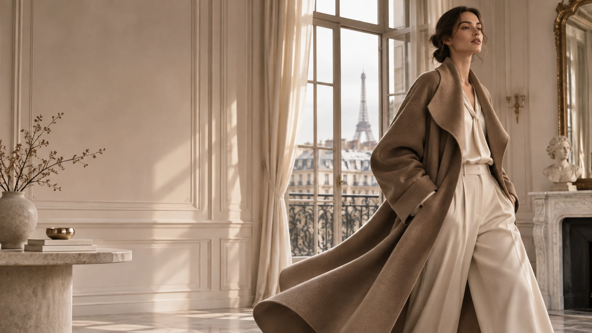

ÉPURE AI EDITORIAL
ÉPURE AI EDITORIAL
AI CONCEPT EDITORIAL · NOT ACTUAL PRODUCTPARIS · ÉPURE COLLECTION / 2026
Le Cachemired'ÉPURE
L’élégance dans chaque maille.
파리의 여백과 캐시미어의 온기를 담은 여성 니트 큐레이션. 내부 검수에서 소재 설명을 검토한 5가지 제품을 소개합니다.
LEXISTYLE 브랜드관 · 이 몰 방문 ↗ÉPURE COLLECTIONFIVE FRENCH-STYLE STUDIESAI EDITORIAL / MATERIAL REVIEW PENDING
THE CURATED EDITION
Cashmere, en cinq pièces.
프렌치 시크 AI 화보와 소재·실측 검수 중인 5가지 여성 니트 스타일.


IMAGE & MATERIAL DISCLOSURE
진열된 이미지는 에퓌르 AI 에디토리얼 콘셉트로 실제 판매 상품과 차이가 있을 수 있습니다. 소재 구성·실측·실재고·판매가는 운영 승인 전까지 확인 중이며 주문은 비활성화됩니다.